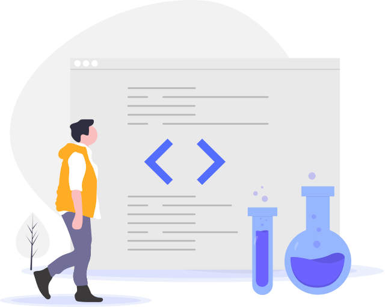

双屏学习
双屏学习，小屏视频互动，大屏实际操作，学习无障碍。打开浏览器，即刻开始编程！
软件定义一切，网络连接时空，学习软件技术，创造未来世界。

每人拥有自己完全独立的编程实验室，内置所有基础软件及学习素材。打开浏览器，即刻开始编程！

双屏学习，小屏视频互动，大屏实际操作，学习无障碍。打开浏览器，即刻开始编程！
特色教学服务功能，各种配套教学服务，在线学习从未如此轻松。
知识提炼、答疑解惑、实时互动、开发有特色的教学服务方式。
多屏合一，随时学习，随时在线，学习记录一目了然，知识充电不再受限。